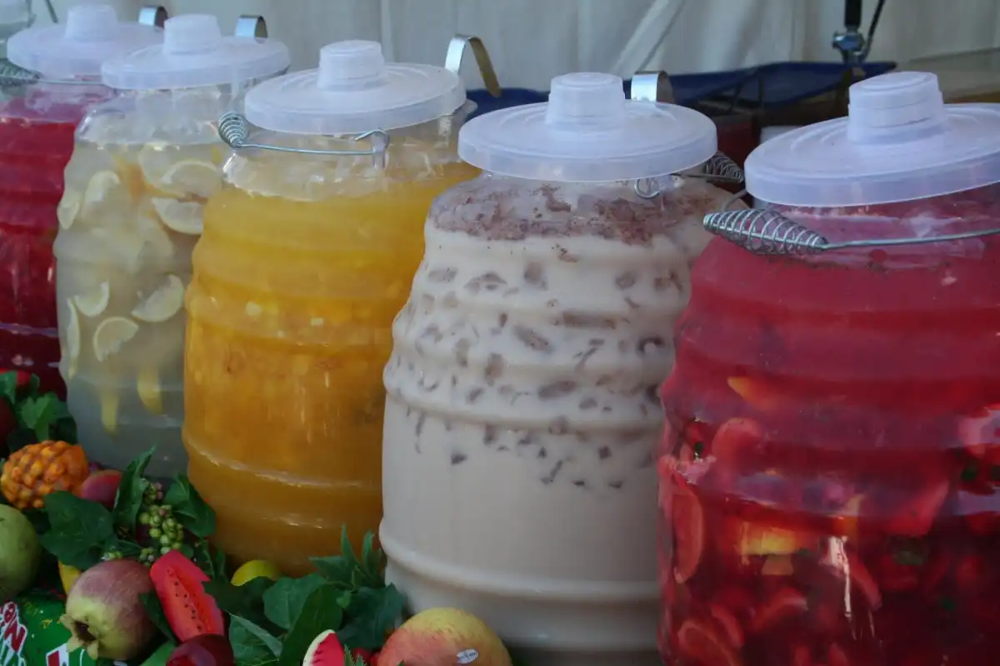
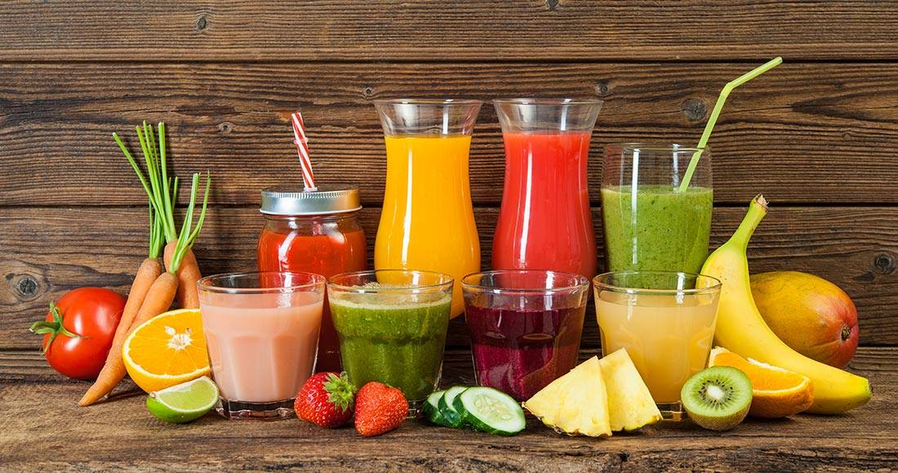

Las bebidas mexicanas son el equilibrio ideal entre sabor, frescura y tradición.
Desde las aguas frescas naturales hasta las mangonadas, hay una opción para cada ocasión.
Prueba estas recetas y sorprende a tus invitados con sabores únicos.



🥭 Mangonada
Mango licuado con chamoy, chile en polvo y jugo de limón. Una explosión de sabores dulces, ácidos y picantes.
Consejo: Añade hielo y trozos de mango para una textura irresistible.